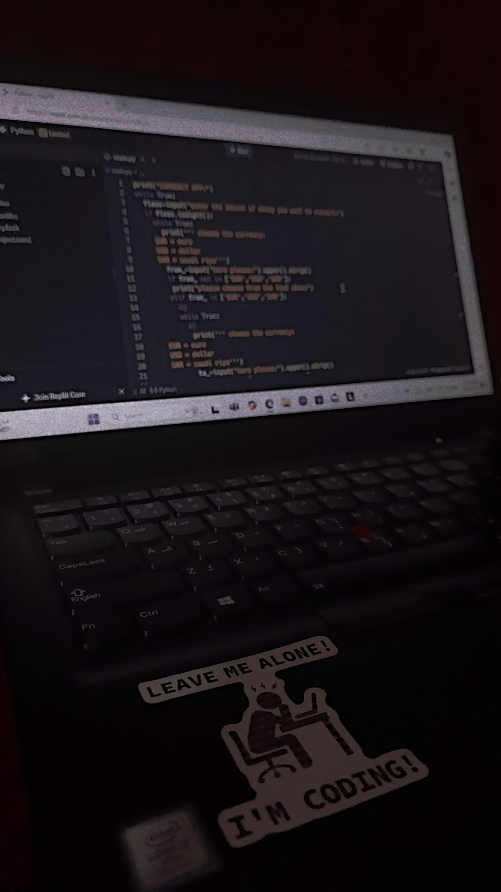

Welcome to my projects portfolio! Here, you will find a collection of projects that I have developed using various programming languages and technologies. Each project demonstrates my skills in web development, problem-solving, and creativity. I am passionate about coding and continuously strive to learn and improve. Below, you will find a list of the primary languages I used in my projects, followed by detailed descriptions of each project.
This project is a simple command-line To-Do List application in Python. It allows users to add, delete, show, mark as completed, and edit tasks through a menu-driven interface. Users can input their choices, and the program performs the corresponding actions while validating inputs. The application runs continuously until the user decides to exit, providing an efficient way to manage tasks interactively.
This Pixel Art project is a fun and creative way to explore digital art . It allows users to create and manipulate pixel art images, providing an engaging platform for both beginners and experienced artists.
Welcome to Florosa, your premier online floral destination for unique and meaningful bouquets that tell your story. At Florosa, we believe that every arrangement is an opportunity to create a memorable experience, and we are committed to providing our customers with the highest level of care and attention.
This project uses Python's turtle module to create a 5x5 grid of randomly colored squares. A function called draw_square is defined to draw a square at specified coordinates with a random RGB fill color. The main loop iterates through rows and columns, calculating the positions for each square and calling the draw_square function. The result is a vibrant grid displayed in a turtle graphics window that remains open until closed manually.